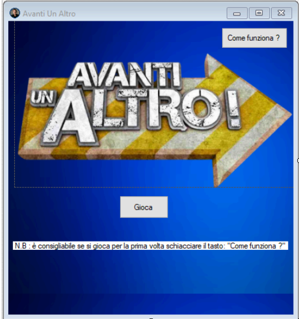
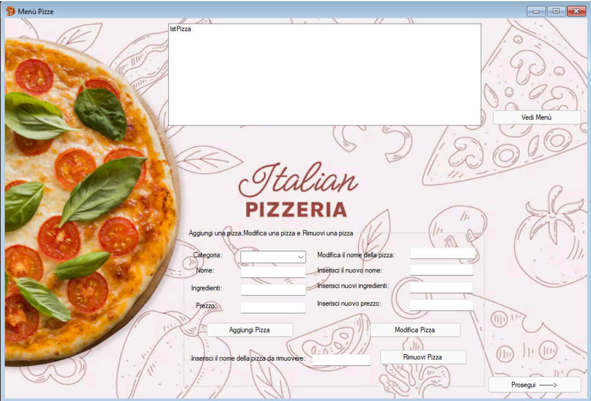
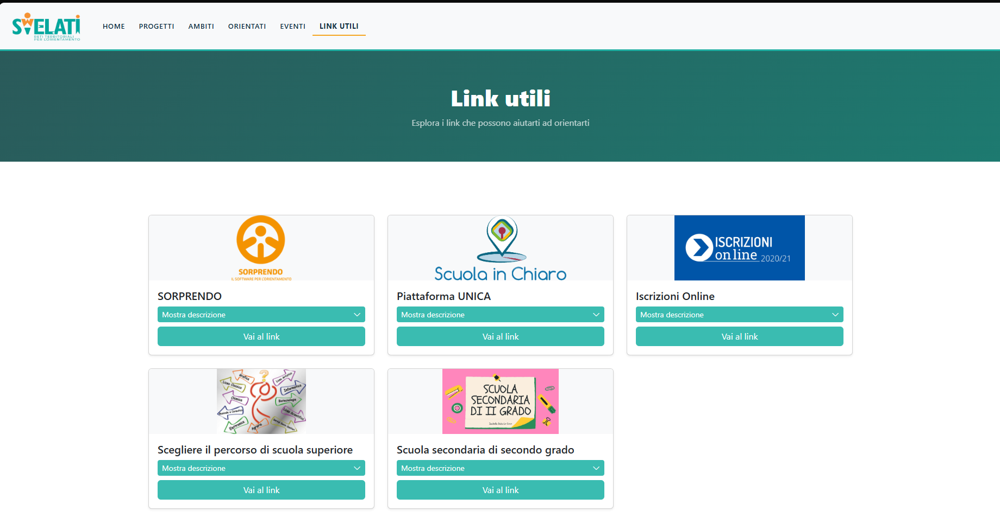

Avanti Un Altro!
Gioco a quiz ispirato al famoso programma televisivo, sviluppato in
C# con Windows Forms.
Il giocatore deve rispondere
in modo sbagliato a domande di Sistemi, TPSIT e Informatica
entro un timer: rispondere correttamente elimina il concorrente.
Il progetto include un sistema di punteggio, gestione del timer,
schermate di vittoria/sconfitta e una sezione "Come funziona?" per
le istruzioni.

Gestionale Pizzeria
Applicazione desktop per la gestione di una pizzeria, sviluppata in C# Windows Forms con collegamento a database. Permette di aggiungere, modificare e rimuovere pizze dal menù (con categoria, nome, ingredienti e prezzo) e di gestire le prenotazioni.

3Elle Orienta — Svelati
Restyling e miglioramento della sezione Link Utili del sito scolastico 3elleOrienta, piattaforma di orientamento per studenti delle medie inferiori. L'obiettivo era rendere la navigazione più chiara e intuitiva.